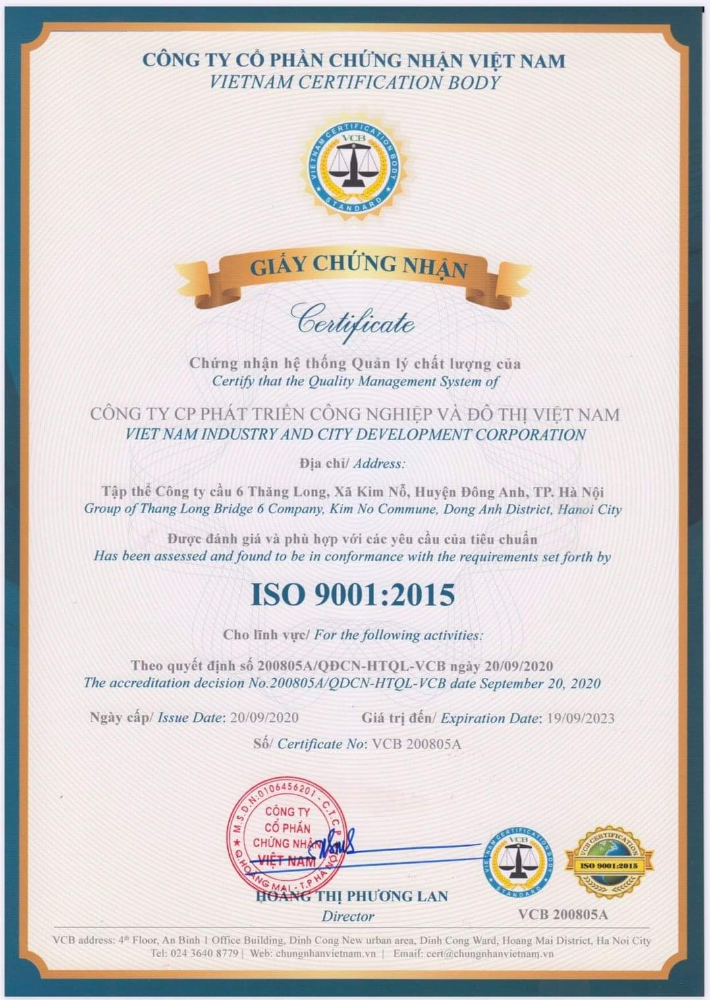

Vietnam Industrial and Urban Development JSC (ICD) receives ISO 9001:2015 certification
In any field, any product or service faces fierce competition. Today that competition is even tougher, demanding not only product quality but also service quality and the quality of people throughout searching, care, sales and after-sales support.
Sometimes the rush to gain market share leaves many companies in a management crisis, not to mention standardizing how they approach and care for partners and control product quality before going to market. Aware of the importance of a professional, scientific management system that serves not only immediate sales direction but also long-term strategy, ICD, with the determination of its leadership and all staff, set out to build and successfully apply a quality management system to ISO 9001:2015, managing work by an international standard system rather than by experience.
On September 20, 2020, ICD was honored to be granted certification of its quality management system to ISO 9001:2015 by Vietnam Certification JSC for the following scope of activities:
- Supply of environmental sanitation and industrial cleaning equipment (street sweepers, waste sweepers, waste collection vehicles, waste bins, industrial cleaning machines, scrubbers);
- Manufacture and supply of security cabins, toll cabins, public restrooms and smart restrooms;
- Supply of forklifts and tow tractors.
This achievement partly affirms the determination of ICD's leadership and staff to standardize product quality through professionalism in management by leaders and every employee.
"THE QUALITY OF EVERY PRODUCT WE SEND TO CUSTOMERS IS THE MEASURE OF ICD'S VALUE"
